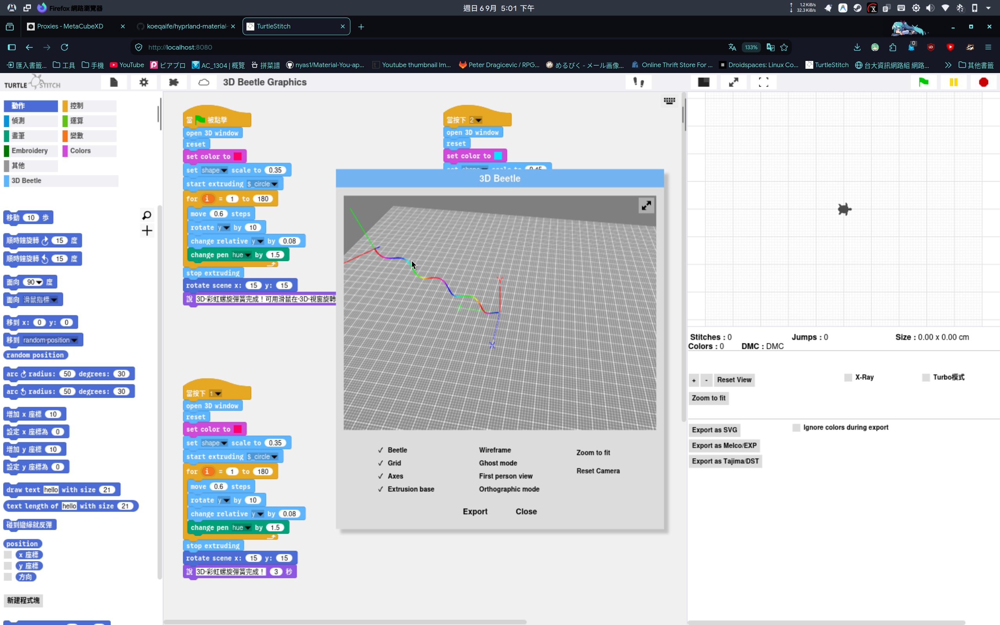
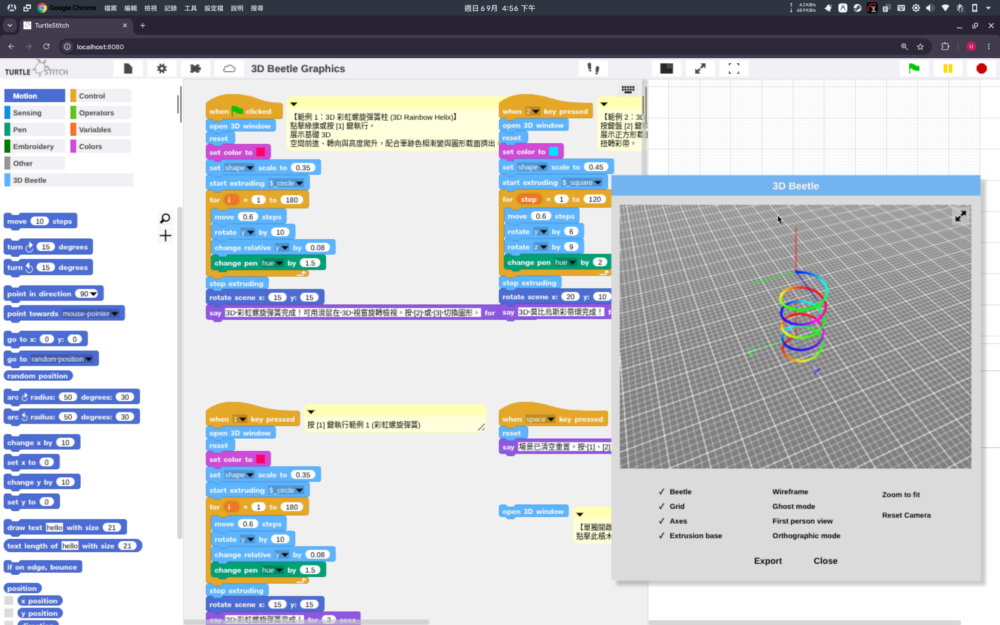

创智实验室 · Level 3 基础期 · 三部曲之一
TurtleFlight这只海龟，会飞了
Level 3 三部曲 · 第一部 · 3D 代码造物课 · 15 次课，每次 2 小时。
Logo 语言六十年正统，加上一门三维空间思维课。每次课都有 3D 打印作品，当堂带走。
先讲一个五十多年前的故事。
1967 年，MIT 有位教授，叫 Seymour Papert。他给孩子们造了一门编程语言，叫 Logo。孩子敲一行命令，屏幕上的小海龟就往前爬一步。想画一颗五角星？指挥它前进、转弯，再前进、再转弯，画着画着，星星就出来了。
后来全世界的少儿编程启蒙，几乎都从这只海龟开始。Scratch 是它的孩子。Snap! 是它的另一个孩子，由 UC Berkeley 维护到今天。
我们 Level 3 的新课，就长在这个家族里。工具叫 3D Beetle。在它这里，海龟进化成了甲虫。
课程的名字就是这么来的：TurtleFlight，海龟飞行。中文故事名，叫它「会飞的海龟」。
· · ·
海龟只能在纸上爬，甲虫会飞。
往前飞，身后挤出一条彩带。边飞边转，长出一根弹簧。盘旋着往上升，就是一座彩虹螺旋塔。
下面两张图不是效果图，是孩子拖几块积木、点一下运行，就能在屏幕里跑出来的真实画面。

循环 180 次，每次前进、旋转、升高、变色，彩虹螺旋塔就长出来了

同一只甲虫，换个截面换个角度，就是另一件作品
甲虫造东西只用一个动作：挤出。像裱花袋，袋口换个形状，挤出来的东西就换一个样子。点挤出成线，线挤出成面，面挤出成体。孩子要操心的只有一件事：指挥它怎么飞。
孩子最上头的环节，是改参数。步长改小一点，弹簧变密。角度改大一点，螺旋变胖。颜色每步加一点，白塔变成彩虹。
改一个数字，换一个世界。很多孩子就是在这里，第一次亲眼看见：数学是活的。
· · ·
家长更该关心的，是这门课练什么。
把复杂的模型拆成「一个动作，重复一百次」，这是分解。
把步长、角度、截面都变成可调的变量，这是抽象。
造型不对就调参数，调到对为止，这是迭代。
平面上的正多边形，长成立体空间里的旋转体，这是空间想象。
这些是计算思维的地基。地基这个东西，考级证书替代不了。
· · ·
还有一件事，要说在前面：这门课，每节课都有东西带回家。
不是等结课才见作品。每一节课，孩子都在课堂上写完代码、导出文件、3D 打印，当堂带走一件实体。15 次课，15 件作品。
第一次下课，孩子手里捏着一件用线挤出的小雕塑。往后越攒越多：弹簧、彩带、花瓶……书桌上慢慢摆出一排。那不是一堆塑料玩具，是一条看得见的成长线，每一件都说得出它是被哪几块积木变出来的。
3D 线条→圆柱棱柱→弹簧→螺旋塔→彩带→花瓶→结课大作品
别的课程，作品活在屏幕里。我们这门课，作品活在孩子书桌上。
· · ·
15 次课，每次 2 小时，一共 30 个小时，四段旅程。
第一段让思维立起来
第 1-4 课
从平面图形走进三维空间，认识会飞的甲虫，学会它唯一的大招：挤出。
第二段循环与参数
第 5-8 课
几块积木跑出弹簧、彩带、彩虹螺旋塔，再把每个数字都变成可以调的参数。
第三段高阶造物
第 9–11 课
零步挤出、旋转体、自定义截面，做出花瓶、酒杯这类真正的立体造型。
第四段真实作品
第 12-15 课
从构思到打印，完成一件属于自己的 3D 作品，然后发布。
第 1 课海龟归来复现 Logo 小海龟，画出平面图形，飞进 3D 视窗带走：名字首字母的 3D 线条
第 2 课会飞的甲虫学会指挥甲虫：移动、旋转、换角度看带走：自己飞出来的线框小雕塑
第 3 课第一个大招：挤出点成线、线成面、面成体带走：小圆柱和棱柱
第 4 课截面的魔法换截面、调粗细，同一只甲虫挤出不同的东西带走：变截面小星星
第 5 课循环的力量几块积木，跑出一根 3D 弹簧带走：一根弹簧
第 6 课彩虹的秘密给模型上色，复刻彩虹螺旋塔带走：彩虹螺旋塔
第 7 课参数的世界数字变成变量，改一个数字换一个世界带走：自选一件最满意的变体
第 8 课双轴旋转挤出一条会拧的三维彩带带走：拧麻花彩带
第 9 课零步挤出原地生成一个面，学会做平滑的转角带走：平滑转角小件
第 10 课旋转体做出花瓶、酒杯这类真正的立体造型带走：一只花瓶或酒杯
第 11 课自定义截面用列表定义自己的截面，造型升级带走：自定义截面作品
第 12 课项目启动定下自己的作品主题，搭出框架带走：大项目第一版草稿
第 13 课项目迭代调试打磨，同学互评带走：迭代后的第二版
第 14 课从屏幕到桌面导出文件，3D 打印成实体带走：大作品主体
第 15 课成果发布作品展示，讲解开源社区提交流程带走：最终成品
· · ·
最后四课，孩子独立完成一件大作品。
自己定主题，自己搭框架，自己调试打磨，自己打印成型，最后站上讲台发布。前面十几件作品是练兵，这一件，是从想法到实体的完整作品。
做得好的作品，还可以提交回 Snap! 和 TurtleStitch 社区。这两个项目背后是 UC Berkeley 和全球的开发者。孩子提交的示例、修正的翻译，社区都会署名，随时可查。
创智的成果出口里，一直有一条：参与大学开源项目。这门课就是那条路的入口。它给孩子的不是一张奖状，是一份经得起查证、能写进履历的贡献记录。
· · ·
这门课，是 Level 3 三部曲的第一部。
三部连起来，是一个完整的故事：先让它飞，再让它思考，最后让它活过来。
第一部 · 基础期
TurtleFlight
会飞的海龟
3D 代码造物。作品从打印机里走出来，每课一件带回家。
第二部 · 实践期
BeetleBrain
会思考的甲虫
Mind+ × Arduino 硬件编程。作品会看、会听、会动。
第三部 · 进阶期
BeetleBot
活过来的甲虫
3D 身体 × Arduino 大脑。期末造出自己的智能作品。
下一部的名字，叫 BeetleBrain，会思考的甲虫。海龟已经会飞了，接下来，它要长出感官和大脑。
课程信息
课名TurtleFlight · 会飞的海龟（Level 3 基础期 · 3D 代码造物课）
适合上过 Scratch 或 Snap! 系积木课的孩子，Level 3 起步，零门槛衔接
课制15 次课，每次 2 小时，共 30 小时
作品每课一件当堂 3D 打印作品带走，15 次课 15 件
设备课堂电脑 + 3D 打印机
咨询课程顾问 13370001068（微信同号），可约试听
五十年编程启蒙，从一只海龟开始。
下一个五十年，让它飞。
别的孩子在屏幕里消费科技，
我们的孩子在代码里创造世界。
潘老师 · 创智实验室 SparkMinds